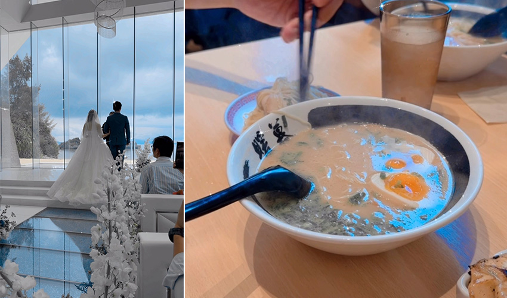
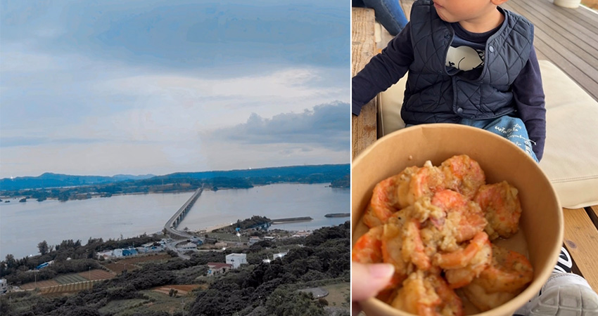

趁小孩 2 歲前，再帶他出國，蹭最後一次免費機票，地點選在最合適親子旅遊的日本沖繩！這次安排 5 天 4 夜，上次來小孩還小，只先安排在中南部玩，這次想往北部探索。
Day 1｜興奮出發，海鮮美食與 Outlet 滿載而歸
第一天坐早上飛機出發，一到機場小童看到飛機就非常興奮。中午到達那霸機場，租好車後，前往系滿魚市場吃午餐，只能說日本海鮮真是新鮮又便宜。接著衝去 Ashibinaa Outlet 逛街，裡面很多品牌，折扣也還算多，逛了 3 小時才依依不捨地離開。
 |
Day 2｜直奔美麗海水族館，海豚、海龜與夢幻鯨鯊登場
重頭戲來了！我們往北部的美麗海水族館出發！11:30 抵達目的地，剛好可以看海豚表演。表演區有詳細的海豚介紹，這才發現海豚有好多種。接著我們來到隔壁的海龜館，看了小童這次最喜歡的海洋生物「海龜」，他可以靜靜地看海龜游來游去，我在旁邊看了很療癒。
 |
看完海龜，我們進到室內水族館的黑潮之境看鯨鯊！小童在戶外跑了一整個上午，當我們進到室內水族館，冷氣涼涼的，他就睡著了，有點可惜。但我還是看得非常入迷，鯨鯊真的好可愛！看完後，我們一路往南開，並住在美國村，美國村的街景真的都很繽紛。
Day 3｜永旺夢樂城親子行程
第三天我們到美國村旁的永旺夢樂城逛街。上午先安排小童在超大的室內遊戲場好好放電，裡面有大球池，還有冰淇淋店、拉麵店，可以滿足小孩當老闆的願望。還有各種火車軌道玩具和扭扭車，讓小童玩得非常開心。我們入場兩個小時 (一大一小)，大概花費台幣 600 元。如果下午想好好逛街，建議早上先安排孩子在這裡放電，也可以考慮前往美國村旁的沖繩動物王國（我們上次已經去過，這次就沒有再安排）。
 |
Day 4｜海島教堂婚禮初體驗
第四天早上，我們到位於北部的教堂 Eines Villa Di Nozze Okinawa 參加朋友婚禮。證婚典禮大概 2 小時，結束後我們到附近很有名的暖暮拉麵用餐，剛好去的時候完全不用排隊，很快就吃到了。口味上我覺得偏清淡、不會太鹹，但如果需要花很多時間排隊的話，可能就不一定特別值得。
 |
下午安排前往古宇利島的海洋塔，主要是看到網路分享可以搭乘「自動駕駛的高爾夫球車」上塔，覺得很有趣，就帶著非常喜歡車子的小童一起來體驗。上面很漂亮可看到整個古宇利橋和海景，最上面還有一個幸福鐘可以敲。
另外也順道去吃了古宇利島很有名的蝦蝦飯，從一台小餐車做到現在有店面，人氣一直都很高。我們這次也很幸運沒有排到隊，很順利就吃到了。吃完的心得是：如果剛好沒什麼人，可以吃看看，但如果排隊太長，就不用特別花時間等了。
 |
Final Day｜帶著滿滿回憶回家
最後一天我們安排中午的班機返台。帶著小孩旅行，5 天 4 夜的行程剛剛好，體力幾乎用盡，腰和手也開始抗議了。不過真心覺得，可以把握孩子 2 歲前安排一次出國旅行，這個階段的孩子已經比較能理解周遭事物，也會走路（當然推車還是必備），可以帶他多認識世界，也可以體驗到免費機票！